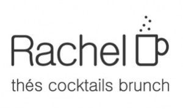

Queremos hacer Blog Bruselas aún mejor y eso cuesta.
Como somos firmes creyentes en eso de que es mejor pedir que robar, te pedimos que nos eches una mano.
Ayúdanos a mejorar con una donación 🙂
¡La voluntad es lo que cuenta!

El blog-guía escrito por españoles en Bruselas para los hispanoparlantes que viven aquí y para los turistas que aprovechan los vuelos baratos para descubrir el chocolate, la cerveza, la Grand Place y tantas otras cosas buenas.
Queremos hacer Blog Bruselas aún mejor y eso cuesta.
Como somos firmes creyentes en eso de que es mejor pedir que robar, te pedimos que nos eches una mano.
Ayúdanos a mejorar con una donación 🙂
¡La voluntad es lo que cuenta!
El sábado 9 abre en Bruselas un nuevo salón de té especializado en baggels y brunchs: Rachel de Bruxelles.
Mi amigo y ex-alumno de MBA Solvay Frederik Haspeslag se ha lanzado a la aventura empresarial nada más terminar el curso, remodelando un antiguo restaurante en el centro de Bruselas (en el 100 de la Rue Marché au Charbon), frente al café-bar Fontainas y algún que otro vecino canalla más.
Se trata de un salón de té moderno en el que poder ir a comer a mediodía y después pasar a tomar un té, un café o un cocktail, pero sin quedarse hasta muy tarde. Y los domingos, ¡brunch! (que no es más que la traducción de almuerzo al inglés finolis 😉
De 14 a 18h habrá cava a gogó y a partir de ahí cócteles a base de té para entrar en calor. Parece que incluso habrá roscón de reyes… y de reinas. Estáis todos invitados.
Quién quiera ir después, que sepa que abre de miércoles a domingo de 11 a 18 y que este mismo domingo ya se puede ir a almorzar-brunchear. Reservas en el +32496134452 e información continuada amigándose a Rachel en Facebook.
Acabo de descubrir una cuenta de Twitter que te va avisando del tiempo que hace en Bruselas: @BrusselsBE. En inglés, eso sí.

No da la previsión del tiempo en Bruselas, te va dando los cambios que hay y poniendo al día. Si estás encerrado en un cubículo viene bien para saber lo que te estás perdiendo y la que, en estos días de frío, está cayendo ahí fuera, con lo bien que se está al ladito del radiador…
Y ya que estáis por Twitter, ¿porqué no suscribiros a la cuenta de Blog Bruselas? Esta vez hemos acertado con el nombre: @blogbruselas. Además de enlazar a las entradas en cuanto se publican, mantenemos una conversación dicharachera con quién tenga ganas de seguir el mismo rollo (aunque a veces también soltamos algún rollo que otro).
Javier Bernal Revert nos ha enviado esta foto y este texto para felicitarnos el año nuevo. Nada mejor que una imagen de nieve en estos días en que amenaza de nuevo con caer una jartá de copos.
Cada Navidad la misma historia: “Y qué frío, allí en Bélgica, ¿no?”.
Pues no.
Es inútil explicar a los amigos que en realidad se pasa más frío en España, donde prácticamente ningún sitio está equipado con calefacción, y cuando lo está, alguien sube la temperatura a 35º, y entonces la gente suda y se resfría en cuanto cruza la puerta de la calle.
¿No os pasa esto a vosotros? ¿Habéis conseguido convencer a alguien de que en Bélgica vivimos felizmente a -10º?
Mientras espero respuestas, os dejo una foto del Parc du Cinquantenaire nevado y reconozco (guardadme el secreto) que en el momento de hacer la foto no sentía los dedos de los pies.
¡Feliz 2010! Nos vemos en la cálida Bruselas.
También ha mandado una postal en vídeo la oficina de turismo de Bruselas, pero les ha quedado regular nada más:
http://www.youtube.com/watch?v=hDxmp6TSd7YPena de vídeo. Nada que ver con el de las vistas de Bruselas.
 Mañana miércoles los chicos del Café Digital (Café Numerique) acogen a las chicas de las cenas geek de Bruselas (Brussels Girl Geek Dinner) en el Mirano.
Mañana miércoles los chicos del Café Digital (Café Numerique) acogen a las chicas de las cenas geek de Bruselas (Brussels Girl Geek Dinner) en el Mirano.
Por si no lo conocéis, el Café Numerique es un evento semanal en el que todos los miércoles nos reunimos todos los que tenemos ganas de aprender y de compartir nuestros conocimientos relacionados con Internet, la informática, la cacharrería electrónica, etc. Es como un café literario, pero en el que hablamos de otras cosas (y cuando hemos hablado de libros ha sido sobre libros electrónicos). Está organizado por Mateusz, Zoltán, Edouard y Vincent. El ambiente es muy relajado y la acogida por parte del personal del Mirano fantástica, con precios populares y bocatas ¡hasta de chorizo! Gracias a estas reuniones he podido incluso verme con otros personajes hispano-bruselenses-tecnófilos como Carlos, que hizo una presentación muy interesante sobre mundos virtuales.
Las cenas para chicas de Brussels Girl Geek Dinner reunen mensualmente a un nutrido grupo de mujeres a las que les interesan la tecnología y la informática. El grupo lo fundó Clo Willaerts y esta va a ser su 23 reunión. Llevo una temporada queriendo asistir (te dejan aunque no seas muy chica si vas amadrinado) pero entre una cosa y otra al final no he podido asistir a ninguna.
En esta ocasión los hombres estamos invitados a asistir sin tener que buscar madrina como en las ediciones anteriores. ¡No dejéis pasar la oportunidad! A partir de las 18h30 en el Mirano.